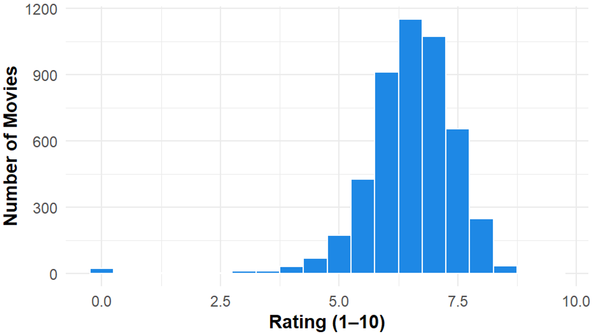
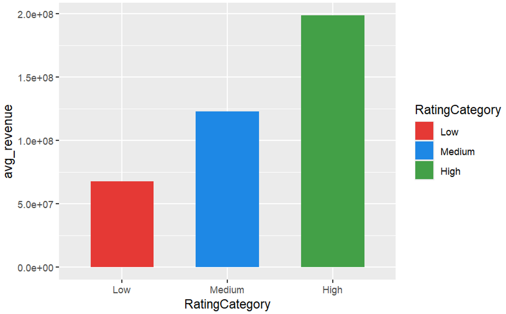
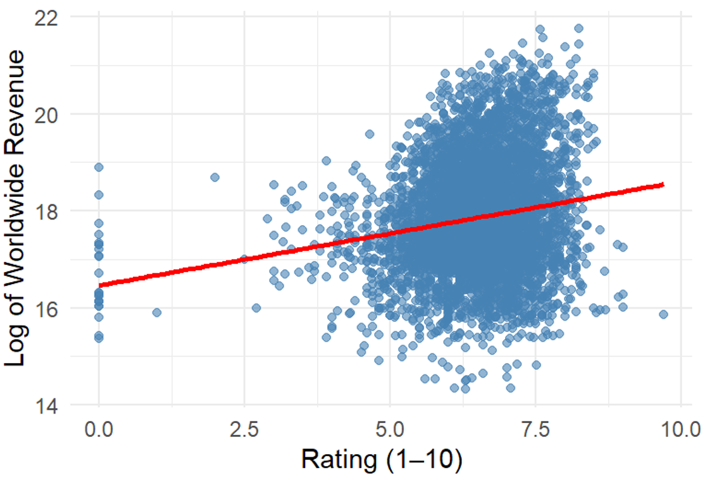

Data Collection
Collected movie data containing ratings, revenue, genres, release information, and other attributes from the Kaggle Box Office Dataset.
Analyzing whether positive reviews influence audience interest using box office data (2000–2024)
This project investigates whether positive reviews influence audience interest and financial success in the movie industry. Using box office data from 2000–2024, the analysis explores the relationship between movie ratings and worldwide revenue through descriptive analytics, inferential statistics and predictive modelling.
This project investigates whether the statement "Positive Reviews Influence Audience Interest" holds true by analyzing the relationship between audience ratings and worldwide box office revenue.
The study examines whether higher-rated movies demonstrate stronger box office performance using descriptive analytics, inferential statistics and predictive modelling.
The study evaluates whether movies with higher audience ratings demonstrate better worldwide box office performance.
There is no statistically significant relationship between audience ratings and worldwide box office revenue.
There is a statistically significant relationship between audience ratings and worldwide box office revenue, where higher-rated movies tend to achieve higher worldwide revenue.
This project follows a structured data analytics workflow covering data preprocessing, descriptive analysis, statistical testing, and predictive modelling to investigate the relationship between audience ratings and worldwide box office revenue.
Prepared raw movie data for statistical analysis and predictive modelling by improving data quality and creating analysis-ready features.
Analyzed movie characteristics and revenue patterns to understand trends between audience ratings and box office performance.
Applied statistical hypothesis testing to evaluate whether differences and relationships exist between audience ratings and worldwide revenue.
Developed a regression model to evaluate the ability of audience ratings to predict worldwide box office revenue.
Collected movie data containing ratings, revenue, genres, release information, and other attributes from the Kaggle Box Office Dataset.
Cleaned and prepared the dataset by handling missing values, inconsistent records, duplicate entries, and converting variables into suitable formats for analysis.
Analyzed movie trends, revenue patterns, and rating distributions using statistical summaries and visualizations.
Applied hypothesis testing and correlation analysis to evaluate the relationship between audience ratings and worldwide revenue.
Developed a linear regression model to evaluate the predictive capability of audience ratings on box office revenue.
Interpreted statistical results and model performance to identify key factors affecting box office success and highlight limitations of ratings-based prediction.
Data cleaning, missing value handling, duplicate removal, and feature preparation.
Analysis of worldwide revenue patterns across different movie rating categories.
Applied hypothesis testing techniques to validate relationships between ratings and revenue.
Built a linear regression model to evaluate revenue prediction capability.
Created visual insights using R visualization libraries to communicate findings.
The following visualizations highlight the key findings from the exploratory, inferential, and predictive analysis performed on the movie box office dataset.

Most movies received medium audience ratings, showing concentration around average scores.

Higher-rated movies generally achieved higher worldwide revenue.

Shows a weak positive relationship between audience ratings and revenue.

Most observations are concentrated around medium ratings and moderate revenue.
p < 2.2 × 10⁻¹⁶
Revenue is not normally distributed. Non-parametric tests were applied.p < 2.2 × 10⁻¹⁶
Weak but significant positive relationship between ratings and revenue.p < 0.001
Significant revenue differences exist between rating groups.While audience ratings show a positive relationship with worldwide box office revenue, this study has several limitations that affect predictive accuracy.
Contains R scripts, data preprocessing workflow, statistical analysis, visualizations, and modelling process.
View Repository →